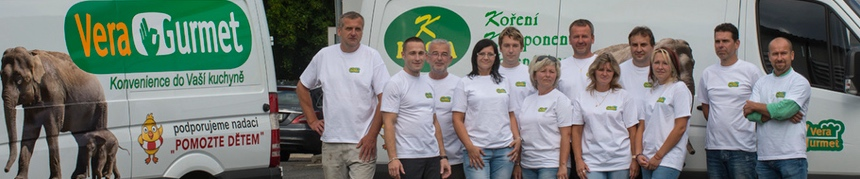

Prodej
Ing. Jaroslav Šulc
Rodinná firma vznikla v lednu 1993. Od začátku jsme přímý dovozce i zpracovatel koření — surovinu si sami čistíme, mleme a podle vlastních receptur mícháme do směsí.

Začínali jsme v lednu 1993 jako rodinná firma s dovozem koření. Postupně jsme přidávali vlastní zpracování — čištění, třídění, mletí — a později i míchárnu a mokrou výrobu. Dnes pokrýváme cestu od suroviny až po hotové balení.
Provozy v Týništi nad Orlicí, ve Strančicích, v Sezimově Ústí a v Toužimi vyrostly z téhle cesty. Gastro směsi vyrábíme pod značkou VERA GURMET.
K dovozu a zpracování koření jsme postupně přidali sušenou zeleninu a byliny. Silnou pozici máme v sušeném česneku, cibuli a majoránce.
Celé suroviny si sami čistíme, třídíme, mleme a podle vlastních receptur z nich mícháme směsi — od jednodruhového koření po kořenicí směsi na míru.
Vedle suchého koření provozujeme i mokrou výrobu — pasty, sójovou omáčku, tekuté polévkové koření a marinády. Vznikají u nás, ne u dodavatele.


Dovozce i zpracovatel pod jednou střechou.
Krátká cesta od suroviny po balení — lepší kontrola nad kvalitou.
Vybrané koření dovážíme přímo ze zemí původu — kmín, černý pepř, koriandr. Po celé České republice nás zastupuje síť obchodních zástupců.
Vyvážíme i do několika evropských a zámořských trhů.